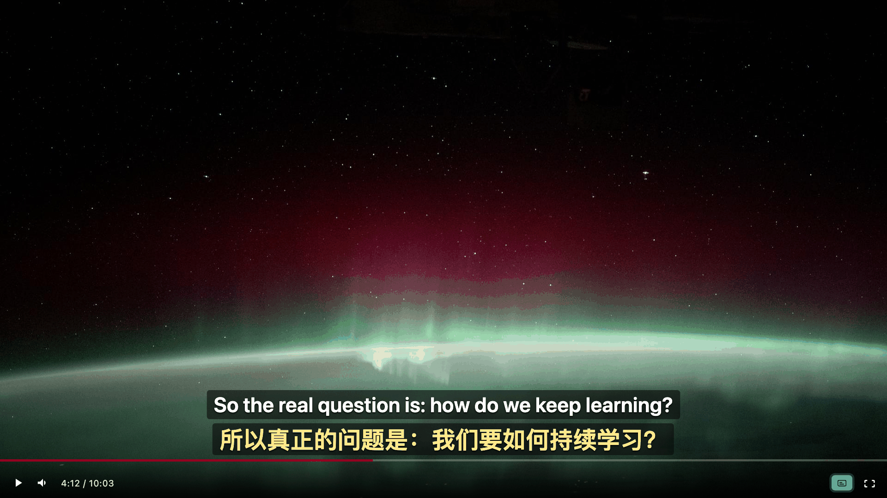
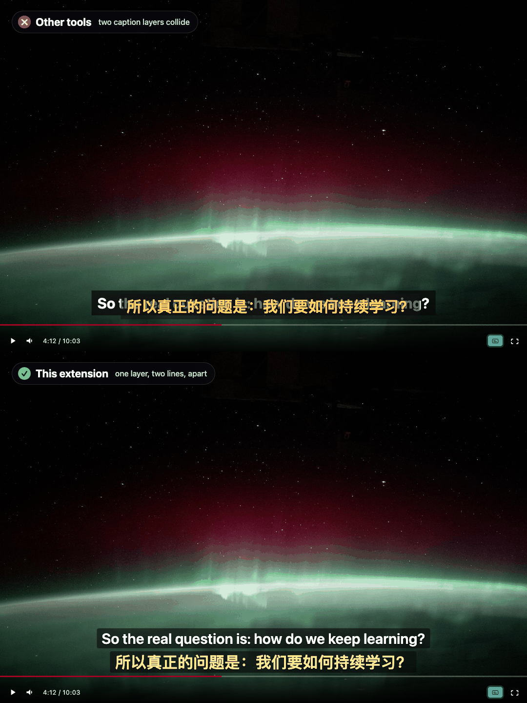
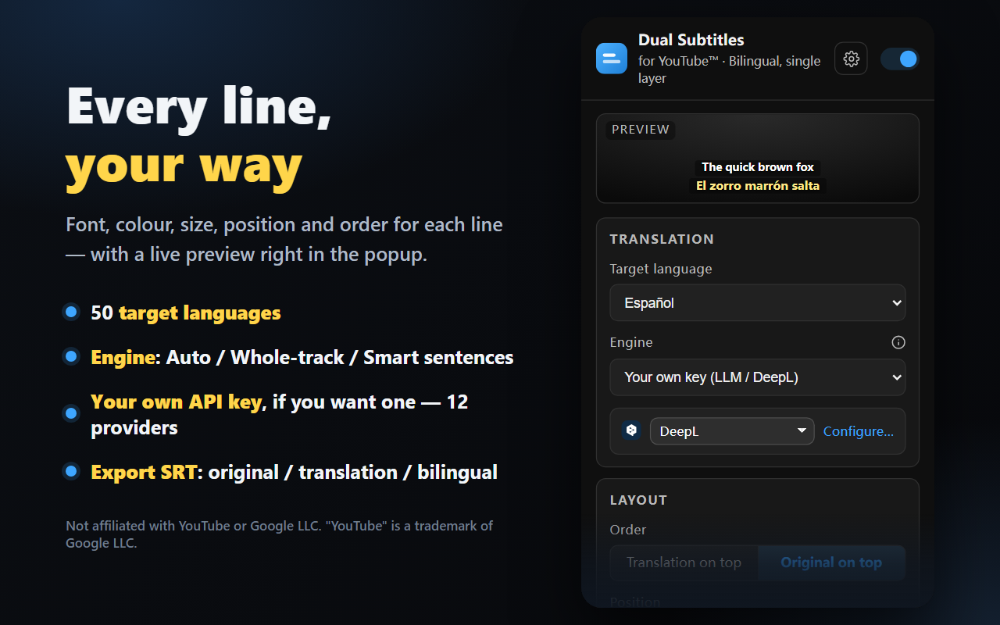

The original language and your translation on every YouTube™ video — a single, non-overlapping layer that switches cleanly, sentence by sentence. Free and open source.
在每一个 YouTube™ 视频上同时显示原文和你的译文——同一层字幕、互不重叠，逐句干净切换。免费且开源。
Also works on Edge同样支持 Edge · Chromium 111+Chromium 111+ · no account无需账号 · runs locally本地运行

It reads the video's real caption track, translates it, and renders both languages in one tidy overlay you can style and drag.
它读取视频真实的字幕轨道，翻译后把两种语言渲染在同一层整洁的字幕里，样式可调、位置可拖。
Choose one of 16 target languages in the popup and which translation engine to use. A live preview shows the result as you tweak.
在弹窗中从 16 种目标语言里选一种，并选择使用哪个翻译引擎。实时预览会随你的调整即时呈现效果。
Press play on any YouTube™ video. Captions turn on automatically, and the player-bar button toggles the overlay on or off.
在任意 YouTube™ 视频上点击播放。字幕会自动开启，播放栏上的按钮可随时开关字幕层。
The original language sits on one line, your translation on the other — one non-overlapping layer that switches sentence by sentence.
原文占一行，你的译文占另一行——同一层字幕互不重叠，逐句切换。
Other tools stack a second track on top of YouTube's own captions and they collide into a blob. This extension hides YouTube's native layer and renders one clean overlay instead.
其他工具会在 YouTube 自带字幕上再叠一层，两者撞在一起糊成一团。本扩展会隐藏 YouTube 的原生字幕层，改为渲染一层干净的字幕。

Original language, at full strength — exactly as spoken in the video.
原文，完整清晰——与视频里说的一字不差。
Your translation, in a dimmer tint underneath, so the two never blur together.
你的译文，以稍淡的色调置于下方，两行绝不会糊在一起。
YouTube's™ own caption layer is turned off, so the two sources never overlap.
YouTube™ 自带的字幕层已关闭，因此两个来源永不重叠。
Use YouTube's™ own whole-track translation for perfectly aligned, instant captions — and when a track can't be translated, fragmented captions are rebuilt into full sentences before Google translates them.
使用 YouTube™ 自带的整轨翻译，字幕对齐精准、即时呈现——视频不支持翻译时，会先把碎片字幕拼回完整句子，再交给 Google 翻译。
Perfectly aligned to the video's timing, and instant.
与视频时间轴完美对齐，即时呈现。
Rebuilds fragmented captions into full sentences before translating — also selectable manually.
先把碎片字幕拼回完整句子再翻译——也可以手动选用。

Set per-line font, size, text color, background color and opacity, outline, and line spacing — and choose which line sits on top. A live preview in the popup shows every change instantly.
可分别设置每行的字体、字号、文字颜色、背景颜色与透明度、描边和行间距——还能决定哪一行在上。弹窗里的实时预览会即时呈现每一处改动。
Grab the handle and drop the subtitle box anywhere on the video — it stays put. Double-click to reset, and it works in fullscreen too. A button in the player control bar turns the overlay on and off.
抓住手柄，把字幕框拖到视频上的任意位置——它会稳稳留在那里。双击即可复位，全屏下同样可用。播放控制栏上的按钮可随时开关字幕层。
Download the current video's subtitles as a standard .srt file — the original language, the translation, or both together as a bilingual file.
把当前视频的字幕下载为标准的 .srt 文件——可选原文、译文，或两者合并成一份双语文件。
1 00:00:04,120 --> 00:00:07,480 The best ideas start as questions. 最好的想法都始于提问。
Translate into 16 target languages
可翻译成 16 种目标语言
Prefer to run it unpacked? Clone the repo, open your browser's extensions page, enable developer mode, and load the folder.
更想以未打包方式运行？克隆仓库，打开浏览器的扩展页面，开启开发者模式，然后加载该文件夹即可。
chrome://extensions → Developer mode → Load unpacked
chrome://extensions → 开发者模式 → 加载已解压的扩展程序
Manifest V3 · works on Chrome, Edge, and other Chromium browsers 111+.
Manifest V3 · 支持 Chrome、Edge 及其他 111+ 的 Chromium 浏览器。
Yes. There are no analytics, no tracking, and no accounts. Caption text is sent only to the translation service you choose — nothing else leaves your browser. The extension is open source under the MIT license, so you can verify this yourself.
私密。没有任何统计分析、追踪或账号。字幕文本只会发送到你自己选择的翻译服务——其余内容都不会离开你的浏览器。本扩展基于 MIT 许可开源，你可以自行核实。
Chrome, Edge, and other Chromium-based browsers on version 111 or newer. It's a Manifest V3 extension. You can install it from the Chrome Web Store, or load it unpacked from the source on GitHub.
支持 Chrome、Edge 以及其他基于 Chromium、版本 111 或更高的浏览器。它是一个 Manifest V3 扩展。你可以从 Chrome Web Store 安装，也可以从 GitHub 上的源码以未打包方式加载。
No. It's completely free and open source under the MIT license. There's no paid tier, no subscription, and no account to create.
不收费。它完全免费，基于 MIT 许可开源。没有付费档位、没有订阅，也不用创建账号。
Yes. It reads the video's real caption track, and it can turn captions on for you automatically. If needed, it also falls back to reading the on-screen caption text, and it survives YouTube's single-page navigation.
支持。它会读取视频真实的字幕轨道，并能自动为你开启字幕。必要时还会回退到直接读取屏幕上显示的字幕文本，并且在 YouTube 的单页跳转中依然稳定工作。
No. YouTube's™ whole-track translation is instant and perfectly aligned, and the Google Translate fallback is prefetched ahead of playback so there's no lag. Lines are rendered from the timed cues, so they switch by whole sentence without flicker.
不会。YouTube™ 的整轨翻译即时呈现、对齐精准，Google 翻译回退方案也会在播放前提前预取，因此毫无延迟。字幕基于带时间轴的轴点渲染，整句切换、不会闪烁。
Hover the subtitle box and drag the little round handle at its top-left corner to put it anywhere on the video — the position is remembered per device, and double-clicking the handle resets it. The popup also has top / center / bottom presets, plus per-line font size and spacing. Since v3.5.0 the box automatically steps above the progress bar while the player controls are visible.
把鼠标移到字幕框上，按住左上角的小圆形手柄就能把它拖到画面任意位置——位置会记住，双击手柄可复位。弹窗里还有顶部/居中/底部三个预设，以及每行的字号、行距等设置。从 v3.5.0 起，播放器控件出现时字幕框还会自动上移避开进度条。
The Smart-sentences engine uses Google's free public endpoint. Under heavy use — long videos, lots of seeking — it may briefly rate-limit. The extension notices, slows down and retries on its own: the translation line shows "…" while it waits, and translations resume automatically, usually within seconds to a couple of minutes. Already-translated sentences stay cached, and YouTube's own whole-track engine is never rate-limited.
智能整句引擎走的是 Google 免费公共接口，重度使用（超长视频、频繁拖进度条）时可能被短暂限流。扩展会自己发现并放慢重试：等待期间译文行显示「…」，翻译通常在几秒到一两分钟内自动恢复。已翻译过的句子有缓存不受影响；YouTube 自带的整轨翻译则完全没有限流。
Add it to your browser in one click. Free, open source, and no account required.
一键添加到你的浏览器。免费、开源，无需账号。
Free免费 · MIT · no account无需账号 · Chromium 111+